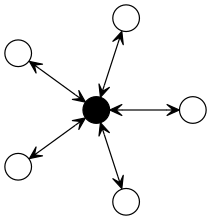

A novel approach to terminology mappings coli-conc Technical Report 3
Introduction
The need of mappings between terminologies, vocabularies, ontologies, and other kinds of knowledge organization systems has been articulated since introduction of such systems at large scale.1 For this reason project coli-conc aims at developing an infrastructure to facilitate management and exchange of (cross-)concordances between terminologies. This report outlines a novel architecure of terminology mappings to ultimately connect all knowledge organization systems.
Background
As soon as concordances cross more than two vocabularies, multiple architectures can be applied (ISO 2013). For small numbers, a many-to-many architecture is feasable, but for more terminologies a hub architecture becomes more appropriate (Binding and Tudhope 2015; Soergel 2011). This requires people to agree on a common hub, but people tend to not agree especially on issues of knowledge organization. Networks of cross-concordances have been applied with success (Mayr and Petras 2008) but web-scale applications of distributed mappings require a new architecure.
| Many-to-many architecture | Hub architecture |
|---|---|
 |
 |
The noodle architecture
We propose the "noodle achitecture" as opposed to the many-to-many architecture and the hub architecture for managing a large number of concordances. In our model each knowledge organization system is once mapped to one other system. This second system is not a central hub but just another terminoloy that happens to be the last one not connected with two other terminologies yet. The resulting data structure has the shape of a very long noodle.
| Noodle architecture |
|---|
This architecture scales as well as the hub architecture but no central terminology is required. We expect this to result in much less debate among information architects because all terminologies are treated equally. To ensure that only one terminology is added at a time at the end of the noodle, the whole data structure is managed as blockchain: this kind of distributed database known from Bitcoin can be applied to other domains as well (Nakamoto 2008).
Summary
This report introduces a novel approach to manage a very large2 number of mappings between any kind of knowledge organization systems. The so called noodle architecture combines the benefit of a hub architecture with less struggle about which system to use as central hub.
References
Binding, Ceri, and Douglas Tudhope. 2015. “Improving Interoperability Using Vocabulary Linked Data.” International Journal on Digital Libraries 17 (1): 5–21. doi:10.1007/s00799-015-0166-y.
ISO, ed. 2013. Information and Documentation: Thesauri and Interoperability with Other Vocabularies. Part 2: Interoperability with Other Vocabularies. ISO 25964-2.
Mayr, Philipp, and Vivien Petras. 2008. “Building a Terminology Network for Search: The KoMoHe Project.” ArXiv:0808.0518 [Cs], August. http://arxiv.org/abs/0808.0518.
Nakamoto, Satoshi. 2008. “Bitcoin: A Peer-to-Peer Electronic Cash System.” https://bitcoin.org/bitcoin.pdf.
Shaw, Ryan. 2015. “Big Data and Reality.” Big Data & Society 2 (2). doi:10.1177/2053951715608877.
Soergel, Dagobert. 2011. “Conceptual Foundations for Semantic Mapping and Semantic Search.” In Concepts in Context: Proceedings of the Cologne Conference on Interoperability and Semantics in Knowledge Organization, July 19th-20th, 2010, edited by Felix Boteram, Winfried Gödert, and Jessica Hubrich, 13–35. Würzburg: Ergon.